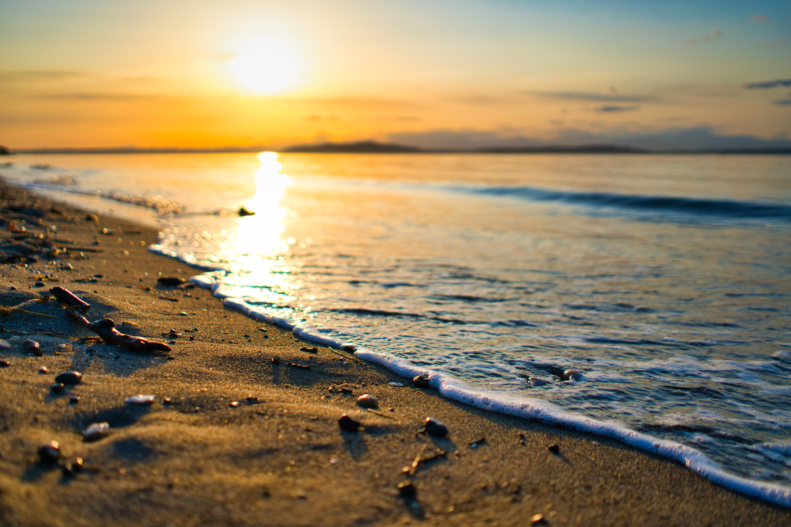
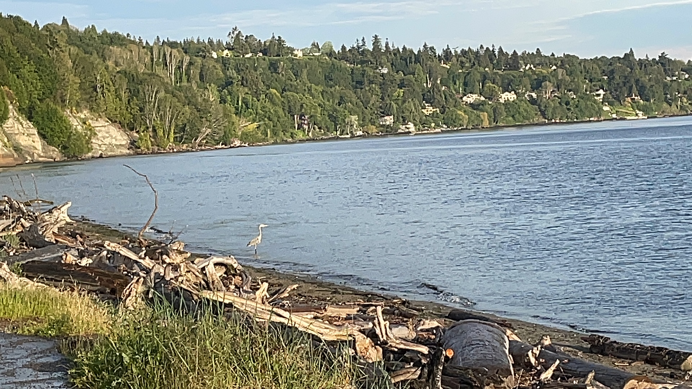

Photo Credit: https://unsplash.com/photos/W4lvhb9Czts
Photo Credit: https://unsplash.com/photos/W4lvhb9Czts
Seattle touches water and provides opportunity for beaches, boardwalks, piers, and parks lined along the waterfronts. Three noteable parks hold some of the most attractive beachfronts. In West Seattle you can venture out to Alki and enjoy views of the city. Take a ferry to the city and walk the Elliot bay trail and you can take a break at Pocket Beach. Stay on the Elliot Bay Trail until you meet Magnolia. Then follow your way to the water no matter which trail or road you take. Not only a treasure for outdoor enthusiasts in the Magnolia neighborhood, Discovery Park is a place of wonder, history, and community. A sunny day in summer will afford enough day light to enjoy all three of these beaches in one day or take your time and spend a day at each. Check out some fun facts on each of the beaches below.
Alki Beach
 Photo Credit: https://unsplash.com/photos/HGubiUXJoa4- Lady Liberty lives here (or at least a replica)
- The first white settlers landed here in the 1800s
- The first municipal saltwater beach on the whole west coast
Discovery Park Beach
Photo Credit: Destinee Sanders
- Hike through the 534 acres to the beach
- Pre-settlers the area was called PKa'dz Eltue (phonically: pa-uq-dz-al-tsu) meaning "thrust far out"
- The park was a US military base for 80 years
Pocket Beach

Photo Credit: Destinee Sanders
- There is a rose garden nearby
- Open from Dawn til Dusk
- Tiny beach in an 11 acre park